Diseños exóticos
Sesto elemento
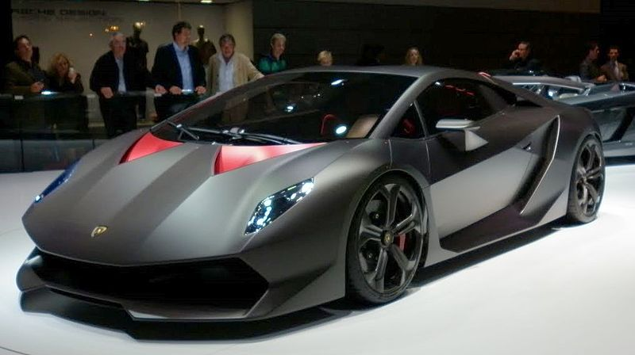El Lamborghini Sesto Elemento nacido como prototipo de superdeportivo y hoy parte de la gama de producción, fue presentado por la empresa italiana de automóviles Lamborghini en el Salón del Automóvil de París de 2010. Su nombre hace referencia al sexto elemento de la tabla periódica de elementos: el carbono; ya que para aligerarlo se ha utilizado en su diseño masivamente la fibra de carbono. Es el lamborghini más rápido y también el más caro.
Las últimas noticias apuntan a su entrada en producción, en un serie muy limitada de unidades, aproximadamente 20 para clientes muy exclusivos de la marca. El precio total es de 2,5 millones de euros.
El prototipo presentado originalmente estaba ensamblado sobre la base de un Gallardo Superleggera LP570-4. Todo el Lamborghini Sesto Elemento está diseñado pensando en ganar la batalla contra el peso haciendo hincapié en los materiales y alcanzado un peso final de 999 kg. Para aligerarlo utiliza fibra de carbono en el habitáculo, en toda la sección frontal de la carrocería y en los parachoques. El subchasis que soporta el motor y los anclajes de la suspensión es de aluminio, en la tornillería se ha utilizado principalmente titanio, y para el ensamblaje de piezas se ha recurrido a técnicas de unión derivadas de la industria aeroespacial. Los tubos de escape son de "Pyrosic", un nuevo material de tipo cerámico, mezcla de polvo cerámico y resina sintética, capaz de tolerar temperaturas muy elevadas, de hasta 900 ºC.
El motor es un V10 montado en posición central longitudinal con 5.2 litros de cubicaje y 570 CV.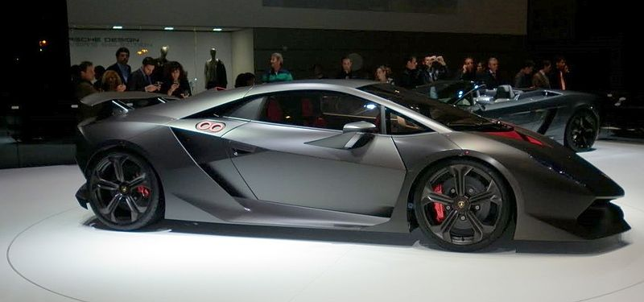
A pesar del aumento de peso que pueda suponer el Sesto Elemento utiliza un sistema de tracción integral permanente, mediante un diferencial central de acoplamiento viscoso, combinado con un autoblocante cuyo tarado transmite un 45% al eje posterior y un 55% al anterior. El vehículo posee una distancia al suelo de 8.7 cm. El cambio es de tipo robotizado e-gear y los frenos cuentan con discos carbo-cerámicos que van alojados en vistosas llantas de CFRP.
El peso mínimo combinados y la potencia que alcanza el motor consiguen una relación peso/potencia de 1,75 kg por CV, lo que se traduce en unas prestaciones de vértigo: 2,5 segundos en el 0 a 100 km/h, velocidad máxima “muy por encima de 350 km/h”. (Como referencia, basta decir que un Lamborghini Gallardo LP 570-4 Superleggera pesa 1.340 kg y tiene una relación peso/potencia de 2,35 kg/CV).
En el diseño exterior llaman la atención los faros frontales, que son de tipo bi-xenón y están enfatizadas por medio de cuatro LED’s colocados verticalmente, la zona posterior por su reducido voladizo y por la adopción de un difusor, un deflector aerodinámico y un alerón que aportan apoyo a alta velocidad y el portón del motor que forma una única pieza con el paragolpes trasero abriéndose al unísono (detalle que estaba ya presente en el Lamborghini Miura. En el interior, de diseño minimalista sólo hay tres botones ubicados en la consola central, uno para poner en marcha el motor, otro para insertar la marcha atrás y el último para activar las luces.
| Ficha Técnica |
Sesto Elemento |
| Motor |
V10 5.2 litros |
| Par motor |
540 Nm |
| Peso total |
999 kilos |
| Potencia |
785 CV |
| Aceleración |
De 0 a 100 kilómetros por hora en 2,5 segundos |
| Velocidad punta |
360 Km/h |
Huracan
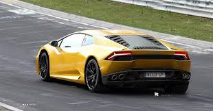2014 (MMXIV) es el año actual. Es un año normal y corriente comenzado en miércoles según el calendario gregoriano.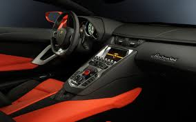
Es también el número 2014 del anno Domini, Era común o la designación de era cristiana, además del decimocuarto del tercer milenio y el quinto de la década de los 2010. De acuerdo al zodiaco chino, es el año del Caballo y del elemento madera.
Las Naciones Unidas han declarado 2014 como Año Internacional de la Agricultura Familiar y Año Internacional de la Cristalografía, Año Internacional de los Pequeños Estados Insulares en Desarrollo y Año Internacional de Solidaridad con el Pueblo Palestino.
Estoque
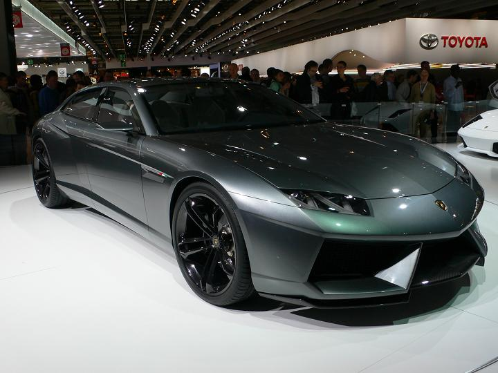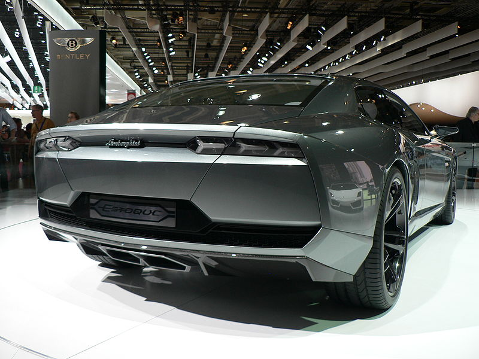El Lamborghini Estoque es un prototipo de automóvil construido por Lamborghini. Es un Sedan de cuatro puertas que se presentó en el Salón del Automóvil de París de 2008. El Estoque es el primer Lamborghini con motor delantero desde el LM002. A pesar de ser clasificado como un prototipo, el Estoque está considerado para salir a producción.1 En la actualidad alberga un V10 de 5,2 litros, aunque se ha especulado que podría ser sustituido por un V12, o un V8, e incluso un híbrido, un motor diésel como sugiere el director de la marca Lamborghini, Manfred Fitzgerald.
Al igual que con otros modelos de Lamborghini, el nombre Estoque deriva de la tauromaquía. El estoque es un tipo de espada utilizada tradicionalmente por los matadores, en las faenas de toros.
Veneno
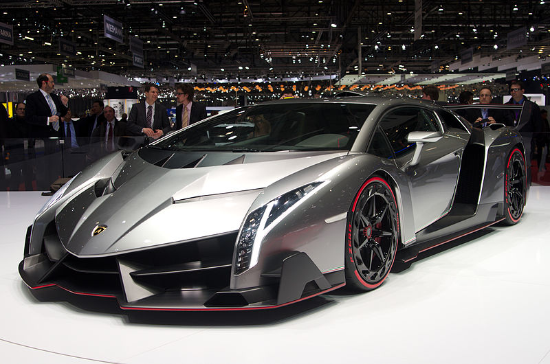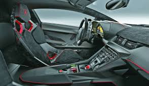El Lamborghini Veneno es un automóvil superdeportivo fabricado por Lamborghini. Fue presentado por primera vez en marzo de 2013, durante el Salón del Automóvil de Ginebra. Su diseño está basado en el Lamborghini Aventador, y fue creado en honor a los 50 años de la empresa italiana. Su motor V12 de 6,5 litros posee una potencia de 750 caballos, siendo capaz de alcanzar los 355 km/h.
Además del automóvil que fue mostrado en Ginebra, sólo serán producidos otros tres coches de la serie, cada uno de un color diferente, verde, blanco y rojo, representando los colores de la bandera italiana. Cada uno cuesta tres millones de euros. El coche exhibido será retenido por la fábrica para estudiar futuras evoluciones del modelo. Los automóviles fueron comprados con antelación, y dos de los dueños son de Estados Unidos
Egoista
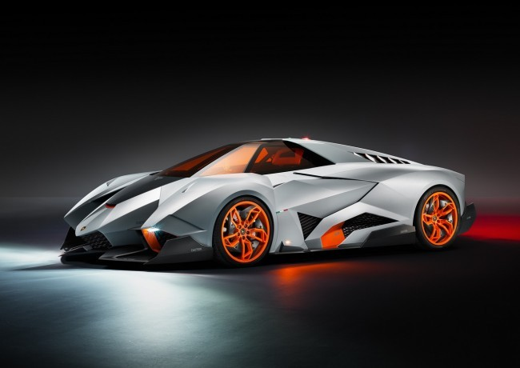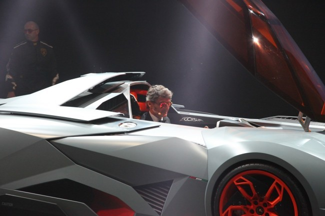El responsable del diseño es de Walter De Silva, que se decidió por hacer una carrocería agresiva, monoplaza, que pudiera transmitir al conductor todas las sensaciones de la conducción. La cabina, de fibra de carbono y aluminio, se puede extraer de la carrocería. Una vez instalada forma una única y aerodinámica pieza con la carrocería.
La carrocería, que tanto habéis criticado durante el día de ayer por sus tres puntas y su forma de segadora, está basada según De Silva en la forma de la cabeza de un toro agachado y listo para embestir. De ahí la punta central y los “cuernos”. Las piezas aerodinámicas no están a la vista, están integradas en la carrocería y actúan automáticamente adaptándose a las condiciones de la marcha.
El morro del Lamborghini Egoísta ha sido diseñado para generar carga aerodinámica. Los faros que se aprecian en las puntas de los salientes laterales son unas luces de posición de LED que permiten ver al coche desde prácticametne cualquier ángulo. Son dos blancas delante y dos rojas atrás, con una luz parpadeante roja en la zona superior trasera, una luz roja en el lado izquierdo del techo, una verde en el lado derecho y dos luces naranjas laterales a modo de intermitentes.
Los faros reales están ocultos en las tomas de aire delanteras, entre los salientes del frontal. Son de xenón. En la carrocería hay zonas delimitadas en las que no se puede caminar, como las que se ven en las alas de los aviones de pasajeros. ¿Quién va a caminar sobre un prototipo único? Además hay otros detalles, como la inscripción bajo la boca del depósito con “Jet fuel only” (solo combustible de reactor) y la zona para entrar y salir marcada con un “Step here” (pise aquí).
Los paneles de la carrocería están fabricados en material antiradar (¡¿Cómo?!), las llantas también, aunque llevan embellecedores de fibra de carbono para mejorar la aerodinámica. Para rematar, los cristales naranjas son antideslumbramiento. Clara inspiración aeronáutica en todos sus aspectos.
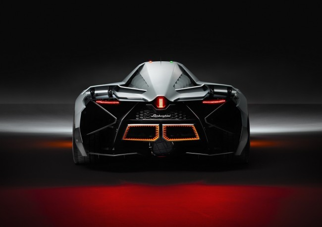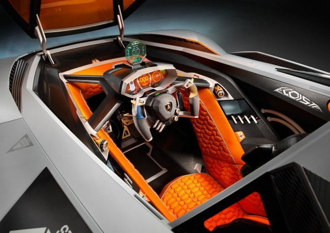En el interior lleva un asiento de competición con cinturón de seguridad de cuatro puntos. Otro de los detalles que invoca a la industria aeronáutica es que sobre el panel de instrumentos lleva un HUD, o Head Up Display, un sistema que proyecta en un panel de cristal octogonal la información del coche en la línea de visión del conductor.
Para entrar o salir del Lamborghini Egoísta, hay que quitar el volante y abrir la cabina, cuya tapa se levanta como en un avión mediante un mecanismo eléctrico. Después hay que ponerse de pie, apoyar el culo en el borde izquierdo y girar para salir de la cabina. No es apto para gente poco ágil.
El Lamborghini Egoísta lleva un motor V10 de 5.2 litros que entrega una potencia de 600 CV y por supuesto el motor va situado tras el conductor. Todo un misil sobre ruedas. Os dejamos con la galería del Lamborghini Egoísta y algunas fotos adicionales de la presentación.
Raro y sin embargo atractivo.